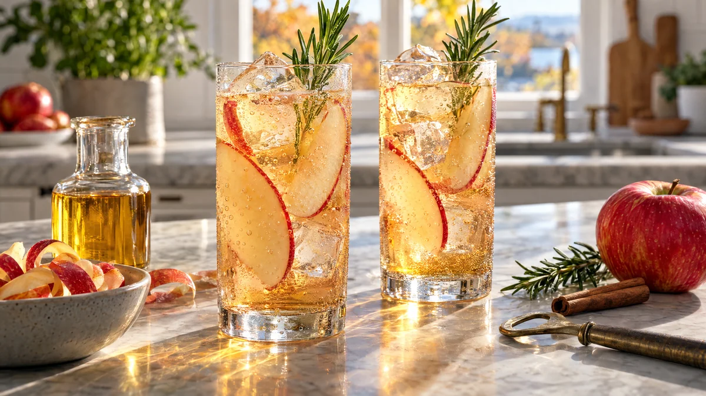

RESTFEST · RECEPTDryck
Äppelskalsspritz med rosmarin
Skal och kärnhus från äpplen, som annars hamnar i komposten, kokas till en gyllene sirap med kanel och en skvätt äppelcidervinäger. Sirapen toppas med iskallt kolsyrat vatten, tunna äppelskivor och en kvist rosmarin. Bubblig, klar och vacker som champagne, helt utan alkohol.
- Förberedelse
- 10 min + 1 tim kylning
- Tillagning
- 15 min + 15 min dragtid
- Portioner
- 4 drinkar (ca 3 dl sirap)
- Nivå
- Nybörjare
 Det här behöver du
Det här behöver du
Tryck på + vid det du behöver köpa.
Äppelskalssirap
Till 4 drinkar
Gör så här
- Lägg äppelskal, kärnhus, vatten, socker och kanelstång i en kastrull. Koka upp och låt sjuda under lock på låg värme i 15 minuter.
- Ta av kastrullen från värmen, lägg i rosmarinkvisten och låt dra i 15 minuter.
- Sila sirapen och pressa ur skalen ordentligt med en sked. Rör ner äppelcidervinägern.
- Låt sirapen svalna och kyl den i minst 1 timme. Den håller i ca 2 veckor i en ren flaska i kylen.
- Skiva äpplet tunt, 1–2 mm, gärna med mandolin eller osthyvel, och pensla skivorna med citronsaft så att de inte mörknar.
- Ställ 3–4 äppelskivor på högkant mot insidan av fyra höga glas. Fyll med is.
- Häll ½ dl sirap i varje glas och fyll på med 1½ dl kolsyrat vatten. Rör om försiktigt en gång, så att bubblorna stannar kvar.
Dekoration och servering
- Toppa varje glas med en liten rosmarinkvist. Gnid den lätt mellan fingrarna först så att den doftar.
- Höga raka glas visar äppelskivorna bäst, men en champagneskål eller ett vinglas ger en festligare känsla.
- Kyl glasen i frysen i 10 minuter innan, så att de blir immiga.
- Vill du ha en variant med alkohol, ersätt det kolsyrade vattnet med torr cider eller cava.
Mått och ugnstemperaturer
Måtten är svenska (dl, msk, tsk, krm). Ugnstemperaturerna gäller vanlig ugn med över- och undervärme; med varmluft, sänk med 20 grader.